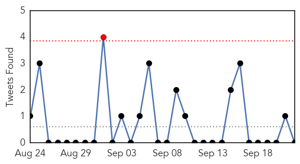
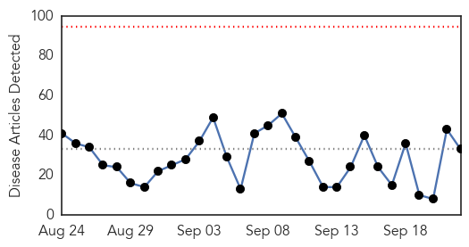

Unknown
30-Day Web Trend
0 alerts, 0 warnings

30-Day Twitter Trend
1 alerts, 0 warnings

Article Locations

Article Confidences

Top Articles:
- 0.960
- The Bellingen Shire Courier Sun
- 0.908
- TB progress threatened by rising drug resistance
- 0.905
- Boise, Meridian, Nampa, Caldwell, Idaho News, Weather, Sports and Breaking News - KBOI 2
- 0.868
- Livestock disease forces quarantine around Riverton
- 0.866
- China says investigating U.S. woman suspected of spying
- 0.863
- New clues on the history of the smallpox vaccine virus
- 0.860
- Tasmania lagging on vaccination access
- 0.858
- Peru confirms 32 anthrax cases
- 0.844
- Flu shot? No need to get out of the car
- 0.818
- Anthrax outbreak: Dozens affected in northwestern Peru
- 0.807
- Officials Link Death of Pima County Woman to Tainted Cucumbers
- 0.800
- NanoBio's Genital Herpes Vaccine Demonstrates Efficacy In Guinea Pigs As Both A Prophylactic And A Therapeutic Vaccine
- 0.798
- CVS Health : Announces New Clinical Affiliations with St. Luke's University Health Network and TriHealth
- 0.785
- Science Confirms Successful Strategy to Protect Threatened Steelhead from Virus
- 0.770
- Hunters, Landowners Encouraged to Report Suspected Cases of EHD Outdoor News Daily
- 0.767
- Lahey Health, Lahey Hospital & Medical Center and Winchester Hospital Receive High Marks from Bond Rating Agencies
- 0.738
- Lahey Health, Lahey Hospital & Medical Center and Winchester Hospital Receive High Marks from Bond Rating Agencies
- 0.729
- Yemen's Hadi 'arrives in Aden' after nearly six months in exile
- 0.729
- Republican Scott Walker quits US presidential race
- 0.729
- Pope Francis arrives in US for first-ever visit
- 0.729
- Saudi Arabia boosts security for start of hajj pilgrimage
- 0.729
- Carson faces backlash over Muslim president comment
- 0.729
- Hungary approves new anti-migrant powers despite outcry
- 0.729
- French travel publisher releases guide book for refugees
- 0.729
- France’s highest court upholds ban on UberPOP ride-sharing service
- 0.729
- Morrocans win discrimination suit against French national railway
- 0.729
- Two Basque separatist leaders arrested in southern France
- 0.729
- EU to hold talks as Hungary expands army's powers to halt migrants
- 0.729
- West African delegation calls for all sides to refrain from violence
- 0.722
- Causes, Symptoms, Diagnosis, Treatment, Prevention
- 0.713
- New Book Reveals How “Functional Medicine” Can Overhaul Health Care & Prevent Chronic Disease
- 0.713
- Health Officials Predict Flu Shot More Effective This Year
- 0.702
- Cat tests positive for rabies in Ohio County
- 0.674
- CDC: Flu Shots Should Prove More Effective This Year Than Last
- 0.659
- Southern Nevada - Las Vegas, North Las Vegas, Henderson, Boulder City
- 0.652
- Doctors recommend certain type of flu shot
- 0.651
- Peru confirms 32 anthrax cases - Xinhua
- 0.589
- Restaurants Can Once Again Serve Raw B.C. Oysters
- 0.589
- 'Aggressive gonorrhoea' heading for Somerset?
- 0.580
- West Africa presidents to travel to Burkina to mediate in crisis
- 0.576
- Patients suffer as doctors on strike in Satkhira
- 0.561
- Dog-bite incidences rise in rabies-infected states – BorneoPost Online
- 0.542
- Have DDT and Polio Vaccines been Used for Population Control?
- 0.531
- Doctors issue warning against pharmacy test
- 0.531
- Vaccine might replace surgery for cervical cancer
- 0.523
- ‘Withdrawal symptoms’ land hundreds in hospital across Telangana
- 0.520
- Celebrating the Post-Graduate Diploma Course in Emergency and Critical Care Medicine > IGIHE.com English Version
- 0.518
- Peru confirms 32 anthrax cases
- 0.507
- HCM City aims to be free of leprosy within five years
Top Tweets:
- 0.654
- Tengo un problema con eso de la pizca de sal
- 0.640
- RT: La Penicilina se descubrió el 22 de Sep. 1928. Una casualidad en el laboratorio de Alexander Fleming inició la "era de los an…
- 0.523
- Se apago el tv de repente...aahh ya,apagón de 3hrs sinluz bueno pa'l calor
Ebola
30-Day Web Trend
0 alerts, 0 warnings

30-Day Twitter Trend
0 alerts, 0 warnings

Article Locations

Article Confidences

Top Articles:
- 1.000
- Some health experts say the USA hasn't learned key lessons from Ebola experience
- 1.000
- Ebola more complicated than many doctors realized
- 1.000
- Errors plagued aid workers during Ebola epidemic
- 0.999
- Year of airport screening doesn't catch Ebola
- 0.998
- Consolidated Support for Liberia's Recovery
- 0.998
- Rapid Response to New Ebola Infection in Sierra Leone
- 0.996
- Bungling by UN agency hurt Ebola response
- 0.992
- Google Science Fair Teen Winner Created a Simple Way to Detect Ebola
- 0.991
- Bungling by UN agency hurt Ebola response
- 0.987
- Ebola: ‘Singing the Oxygen Song'
- 0.978
- Investigation finds more evidence of World Health Organization mismanagement of Ebola crisis
- 0.974
- Extensive airport screening to end for Liberian passengers
- 0.971
- Liberia Gets New Public Health Center
- 0.970
- WHO errors undermines fight against Ebola in Kenema « Awoko Newspaper
- 0.967
- AP Investigation: Bungling by UN agency hurt Ebola response
- 0.967
- “Relax Harsh Restrictions,” AFDB President Urges Investors In Liberia
- 0.960
- Bungling by U.N. Agency Hurt Ebola Response
- 0.960
- Bungling by UN agency hurt Ebola response
- 0.954
- More optimism on Ebola situation today
- 0.954
- Liberia Dedicates U$6M Emergency Operating Center
- 0.939
- Sexually transmitted Ebola and other hot topics in the world of STIs
- 0.921
- Nigeria is working on Ebola drug -NIPRD DG
- 0.911
- EVD Outbreak, its effect to the environment - Sierra Leone
- 0.887
- US doctor beats Ebola, will leave hospital
- 0.886
- New Report Finds World Health Organization's Errors, Incompetence Cost Lives During Ebola Outbreak
- 0.885
- 284 Communities at the Epicenter of the Ebola Outbreak Remained Ebola-Free - How Did That Happen? What Can We Learn from Them?
- 0.758
- Sierra Leone: UNFPA Provides Critical Response to Humanitarian Situation Caused by Torrential Rains and Floods in Freetown - Sierra Leone
- 0.745
- Millennium Challenge Corporation approves $300 million for Liberia and Sierra Leone
- 0.672
- Ebola nurse from Blantyre Health Centre speaks about her time in Africa
- 0.638
- Talk: Dr. Javid Abdelmoneim at Trinity College, Dublin, September 24th
- 0.598
- The student who fought Ebola fear with facts and plantain
- 0.595
- Haiz, is KILLING dogs the only way to stop rabies in Malaysia? [UPDATE]
- 0.584
- United Nations World Food Programme - Fighting Hunger Worldwide
Top Tweets:
- 0.975
- Ebola Virus Disease and ForestFragmentation in Africa Deforestation http://t.co/TJEdIKfJK8
- 0.974
- Maladie à virus Ebola et fragmentationdesforêts en Afrique déforestation http://t.co/SUl52Q7yJg
- 0.967
- 284 Communities at the Epicenter of the Ebola Outbreak Remained Ebola-Free ... - Huffington Post http://t.co/JGH9WYeuQa ebola EVD
- 0.918
- Bungling by UN agency hurt Ebola response - News24 http://t.co/l71AHRdUaE ebola EVD
- 0.912
- US Government Allocates $38Mln for Developing Ebola Cure - Sputnik International http://t.co/4qsrskoIl8 ebola EVD
- 0.893
- AP Investigation: Bungling by UN agency hurt Ebola response - Newsday http://t.co/7OZPt2FnbK ebola EVD
- 0.872
- Avoidable errors undermined efforts to curtail Ebola - Dubuque Telegraph Herald http://t.co/yyu0yYBlF3 ebola EVD
- 0.838
- AP Investigation: Too few body bags and bad chlorine marred WHO Ebola response ... - Minneapolis S... http://t.co/KA7qvuhspF ebola EVD
- 0.792
- Year of airport screening doesn't catch Ebola - USA TODAY http://t.co/VfAdOVHpG2 ebola EVD
- 0.688
- Bungling by UN agency hurt Ebola response - http://t.co/CC7RGwJWiR http://t.co/BqnVF2D4AT ebola EVD
- 0.619
- WHO missteps hurt Ebola response http://t.co/6PiidjUWJw
- 0.606
- 'No Concern' - US Envoy On Misuse of Ebola Donations - http://t.co/NaiI6Jl8yj http://t.co/nOFuSVnbT1 ebola EVD
- 0.598
- Inovio Gets Grant for Ebola Drugs, Regeneron Inks Deal - http://t.co/dHKFn8tP29 http://t.co/QHK2sgjytF ebola EVD
- 0.597
- The Global Response to Ebola MSF http://t.co/euQ6AIce9C
- 0.575
- .@BU_Tweets doctor raises funds 4 Sierra Leonean doctors who went unpaid during the Ebola crisis http://t.co/81maegTPjf
- 0.564
- The Ebola crisis led to many unintended challenges including thousands of unregistered births in Liberia http://t.co/tHE1yhjNOm
- 0.561
- Tango Sensitises Stakeholders On Hand Washing, Ebola Prevention - http://t.co/NaiI6Jl8yj http://t.co/pon4RS6b1A ebola EVD
- 0.550
- Ebola Response in SierraLeone - LessonsLearned http://t.co/tIhJOLJ6WA